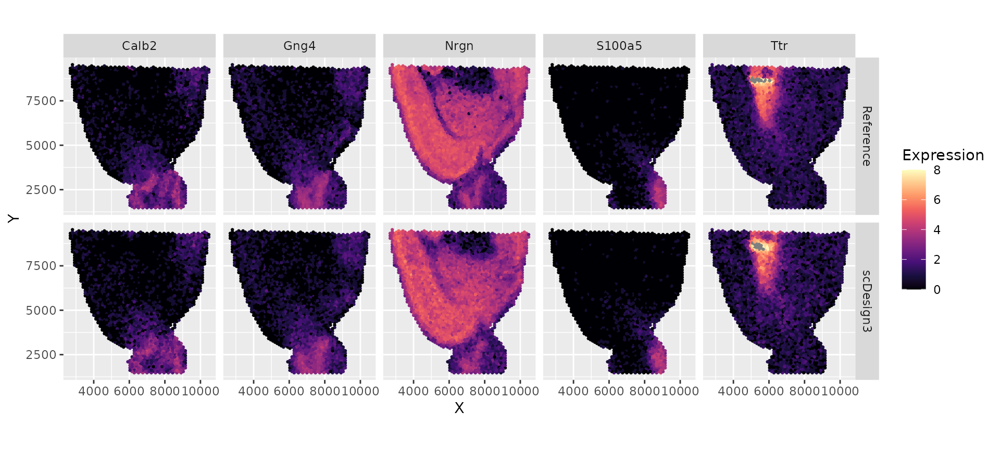

Simulate spatial transcriptomic data
Dongyuan Song
Bioinformatics IDP, University of California, Los Angelesdongyuansong@ucla.edu
Qingyang Wang
Department of Statistics, University of California, Los Angelesqw802@g.ucla.edu
15 January 2023
Source:vignettes/vignettes/scDesign3-spatial-vignette.Rmd
scDesign3-spatial-vignette.Rmd
library(scDesign3)
library(SingleCellExperiment)
library(ggplot2)
library(magrittr)
library(dplyr)
library(viridis)
theme_set(theme_bw())Introduction
In this tutorial, we show how to use scDesign3 to simulate the single-cell spatial data.
Read in the reference data
The raw data is from the Seurat, which is a dataset generated with the Visium technology from 10x Genomics. We pre-select the top spatial variable genes.
example_sce <- readRDS((url("https://www.dropbox.com/s/v1uazcl2glirmfe/VISIUM_sce.rds?raw=1")))
print(example_sce)
#> class: SingleCellExperiment
#> dim: 1000 2696
#> metadata(0):
#> assays(2): counts logcounts
#> rownames(1000): Calb2 Gng4 ... Fndc5 Gda
#> rowData names(0):
#> colnames(2696): AAACAAGTATCTCCCA-1 AAACACCAATAACTGC-1 ...
#> TTGTTTCACATCCAGG-1 TTGTTTCCATACAACT-1
#> colData names(12): orig.ident nCount_Spatial ... spatial2 cell_type
#> reducedDimNames(0):
#> mainExpName: NULL
#> altExpNames(0):To save time, we subset the top 10 genes.
example_sce <- example_sce[1:10, ]Simulation
Then, we can use this spatial dataset to generate new data by setting
the parameter mu_formula as a smooth terms for the spatial
coordinates.
set.seed(123)
example_simu <- scdesign3(
sce = example_sce,
assay_use = "counts",
celltype = "cell_type",
pseudotime = NULL,
spatial = c("spatial1", "spatial2"),
other_covariates = NULL,
mu_formula = "s(spatial1, spatial2, bs = 'gp', k= 400)",
sigma_formula = "1",
family_use = "nb",
n_cores = 2,
usebam = FALSE,
corr_formula = "1",
copula = "gaussian",
DT = TRUE,
pseudo_obs = FALSE,
return_model = FALSE,
nonzerovar = FALSE
)Then, we can create the SinglecellExperiment object
using the synthetic count matrix and store the logcounts to
the input and synthetic SinglecellExperiment objects.
Visualization
We reformat the reference data and the synthetic data to visualize a few genes’ expressions and the spatial locations.
VISIUM_dat_test <- data.frame(t(log1p(counts(example_sce)))) %>% as_tibble() %>% dplyr::mutate(X = colData(example_sce)$spatial1, Y = colData(example_sce)$spatial2) %>% tidyr::pivot_longer(-c("X", "Y"), names_to = "Gene", values_to = "Expression") %>% dplyr::mutate(Method = "Reference")
VISIUM_dat_scDesign3 <- data.frame(t(log1p(counts(simu_sce)))) %>% as_tibble() %>% dplyr::mutate(X = colData(simu_sce)$spatial1, Y = colData(simu_sce)$spatial2) %>% tidyr::pivot_longer(-c("X", "Y"), names_to = "Gene", values_to = "Expression") %>% dplyr::mutate(Method = "scDesign3")
VISIUM_dat <- bind_rows(VISIUM_dat_test, VISIUM_dat_scDesign3) %>% dplyr::mutate(Method = factor(Method, levels = c("Reference", "scDesign3")))
VISIUM_dat %>% dplyr::filter(Gene %in% rownames(example_sce)[1:5]) %>% ggplot(aes(x = X, y = Y, color = Expression)) + geom_point(size = 0.5) + scale_colour_gradientn(colors = viridis_pal(option = "magma")(10), limits=c(0, 8)) + coord_fixed(ratio = 1) + facet_grid(Method ~ Gene )+ theme_gray()